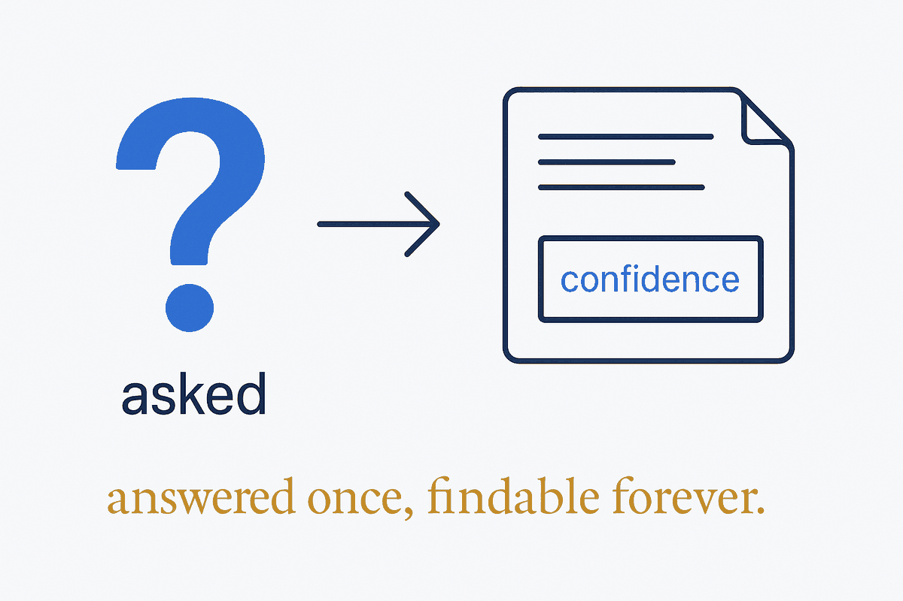

Writing
Research

Questions investigated properly and written down — sources checked against the primary record, findings dated, open gaps stated rather than smoothed over. Each is a markdown file with a metadata header; this section is generated from those files.
- Claude skills for diagrams and briefs — is there a usable collection, and is there an ERD skill? No, and the gap is the finding. Two of three widely-cited diagram skills turn out not to exist. Jul 2026
- The visual tool landscape — file formats of draw.io, yEd, Mermaid, Excalidraw, JSON Canvas, Miro and Heptabase, and which features are buildable ourselves. Jul 2026
- Miro API and the collaborative visual experience — can modelling become a live shared activity, and how does that compare to Ellie.ai? Jul 2026
Why publish research at all? Because studying how other tools solve the visual problem is not idle curiosity — it is requirements-gathering with evidence. Write the findings as structured metadata and a specified feature is already halfway built.